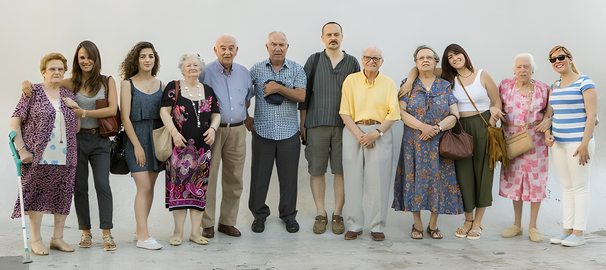
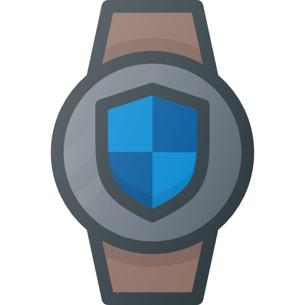
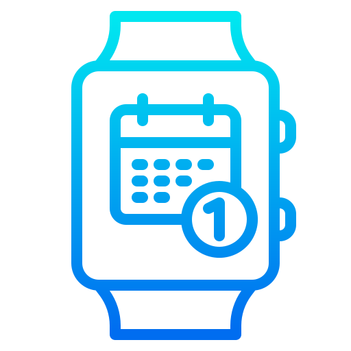
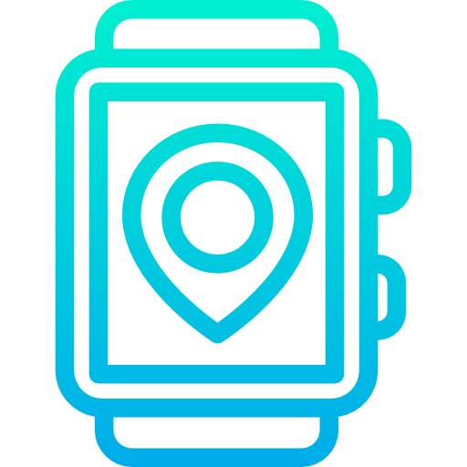
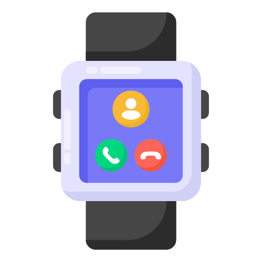

Introducción

Silver Companion es una empresa que se dedica a brindar soluciones innovadoras, centradas en el uso de pulseras inteligentes, para combatir la soledad en personas mayores, a través del uso de la inteligencia artificial (IA) capaz de interactuar con el usuario a través de la voz y otras tecnologías de vanguardia.
Nuestro nombre hace referencia a nuestros usuarios, los cuales son personas mayores que requieren acompañamiento y no desean sentirse solas. Nuestro eslogan, "Siempre-Contigo", resume nuestro principal objetivo de reducir la soledad en las personas mayores.
Nuestra misión es reducir el número de personas mayores que padecen soledad, mejorando su calidad de vida y facilitando sus tareas y hábitos diarios. Para lograrlo, contamos con un equipo de expertos altamente capacitados en el desarrollo de tecnologías innovadoras que permiten ofrecer un servicio de alta calidad y personalizado.
Nuestro plan de comunicación se basa en una página web que ofrece información detallada sobre nuestros productos y servicios, así como la posibilidad de contratarlos. Además, mantenemos una presencia activa en redes sociales como Instagram, Facebook y LinkedIn, en las que compartimos información actualizada y novedades de la empresa. De esta manera, nos aseguramos de estar siempre disponibles para nuestros clientes y seguidores, y de mantenerlos al tanto de nuestras actividades y avances.
Sobre Nosotros
En nuestra empresa, nos comprometemos a proporcionar un servicio excepcional a personas mayores mediante el uso de relojes inteligentes. Nos esforzamos por ofrecer soluciones personalizadas y atender las necesidades específicas de cada uno de nuestros clientes.
Puntualidad
Valoramos la importancia del tiempo de nuestros clientes y nos comprometemos a ser puntuales en cada uno de nuestros compromisos. Nos aseguramos de que nuestros clientes reciban un servicio de alta calidad de manera oportuna.
Trato personalizado
Cada uno de nuestros clientes es único y tiene necesidades específicas. Por ello, nos aseguramos de brindar un trato personalizado y cercano a cada uno de ellos, adaptándonos a sus requerimientos y buscando siempre su bienestar y confort.
Seguridad
En nuestra empresa, nos preocupamos por la seguridad de nuestros clientes. Por ello, nos aseguramos de brindar un servicio confiable y seguro mediante el uso de tecnología avanzada en nuestros relojes inteligentes, garantizando así la tranquilidad y confianza de nuestros clientes y sus familiares.
Servicio

Asistencia y seguridad
Con nuestros relojes inteligentes, los familiares de las personas mayores podrán estar tranquilos y tener una mayor seguridad en caso de emergencia, ya que podrán conocer su ubicación y contactar con ellos de forma telemática.

Recordatorios y eventos
Nuestros relojes también incluyen la función de recordatorios y eventos, para que las personas mayores no olviden citas médicas, reuniones familiares o cualquier otra actividad importante en su día a día.

Geolocalización
Gracias a la función de geolocalización, podremos saber en todo momento la ubicación de nuestros mayores, lo que nos permitirá estar más tranquilos y controlar mejor su seguridad.

Contacto con familiares
Con nuestro servicio de relojes inteligentes, las personas mayores pueden mantenerse en contacto con sus familiares y seres queridos de manera fácil y accesible.
Contacto
Para más información sobre nuestros relojes inteligentes para personas mayores, por favor contáctanos: